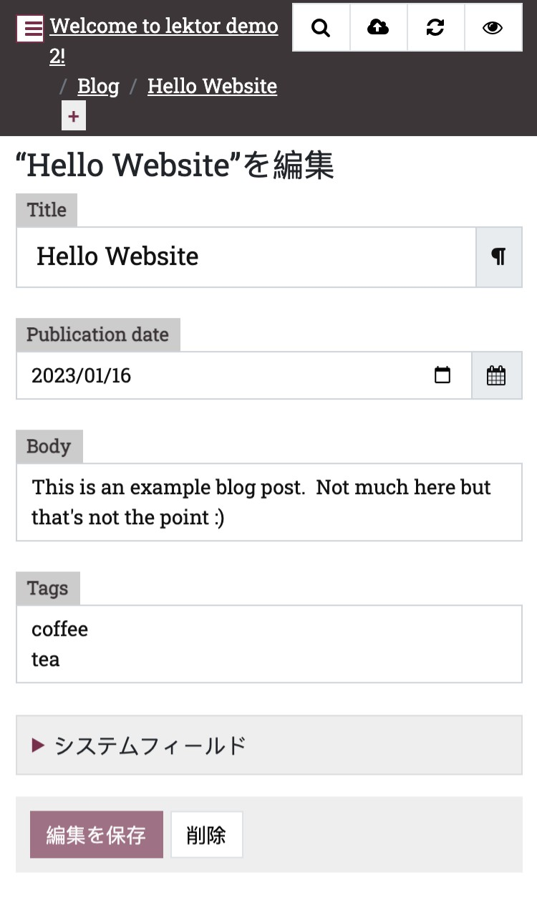
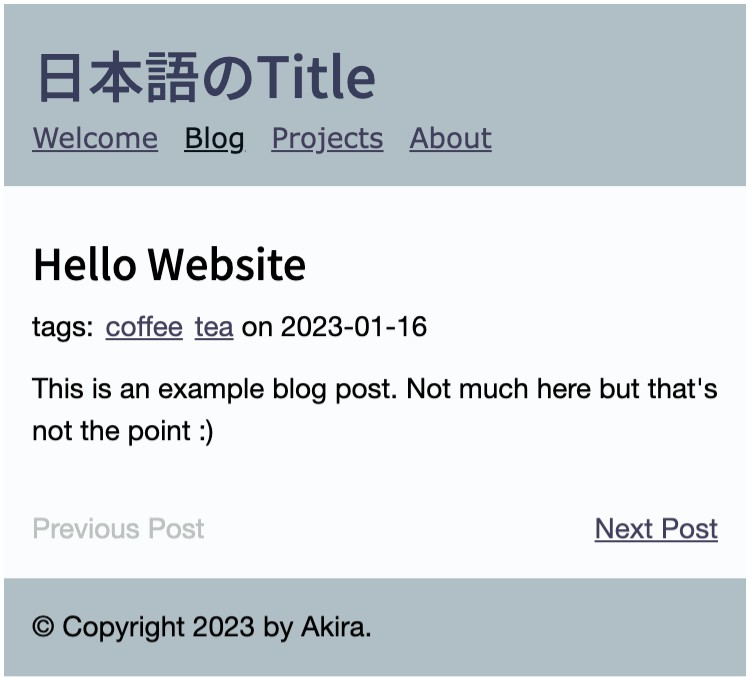
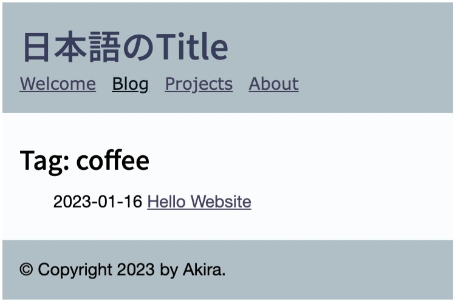

記事へタグのフィールドを追加し、タグを管理するプラグインを導入します。そしてタグに対する投稿の一覧ページを生成するテンプレートを作成します。
blog-post.iniへ新たなフィールドfields.tagsを追加します。typeには複数行のテキストを定義するstringsを指定します。
同時にサイトの構成をシンプルにするため、著者名とツィッターハンドルのフィールドfields.authorとfields.tiwtterを削除します。
[fields.author]
label = Author
type = string
width = 1/2
[fields.twitter_handle]
label = Twitter Handle
type = string
width = 1/4
= @
[fields.pub_date]
label = Publication date
type = date
width = 1/4
[fields.body]
label = Body
type = markdown
[fields.tags]
type = strings
記事の編集画面を開くと、Bodyフールドの下にTagsフィールドが確認できます。サンプルとして、Tagsフィールドに、coffeeとteeを入力しました

$ lektor plugins add lektor-tags
または、
[packages]
lektor-tags = 0.5.1
lektor-tagsプラグインは、独自の設定ファイルを必要とします。プロジェクトのルートに、configsというディレクトリを作成し、その中にtags.iniという名のファイルを作成します。
|- configs/
|- tags.ini
tags.iniへ下記の記述を行います。
parent = /blog
items = this.parent.children.filter(F.tags.contains(tag))
url_path = {{ this.parent.url_path }}tag/{{ tag }}
ignore_missing = true
template = tag.html
macros/blog.htmlのmetaクラスの記述を、タグ名を表示するように書き換えて、AutherとTwitterの表示部分は削除します。
<div class="meta">
<ul>
{% if post.tags %}
{% if post.tags|length == 1 %}
<li>tag:</li>
{% else %}
<li>tags:</li>
{% endif %}
{% for t in post.tags %}
<li>
<a href="{{ ('/blog@tag/' ~ t.lower() )|url }}">{{ t }}</a>
</li>
{% endfor %}
</ul>
{% endif %}
<span>
on {{ post.pub_date }}
</span>
</div>
<p class="meta">
written by
{% if post.twitter_handle %}
<a href="https://twitter.com/{{ post.twitter_handle }}">{{ post.author or post.twitter_handle }}</a>
{% else %}
{{ post.author }}
{% endif %}
on {{ post.pub_date }}
</p>
タグの表示に係わるスタイルを追加します。
/* tags */
.meta {
display: flex;
justify-content: start;
}
.meta ul {
list-style: none;
margin: 0;
padding: 0;
}
.meta ul li {
display: inline;
margin: 0 2px 0 0;
padding: 0;
}
.meta span {
margin-left: 2px;
}
投稿日付の左側にタグ名が表示されました。 
タグ名のリンク先に、タグの投稿一覧を表示するテンプレートtag.htmlを作成します。
{% extends "layout.html" %}
{% block title %}{{ this.title }}{% endblock %}
{% block body %}
<div class="tag-page">
<h2>Tag: {{ this.tag }}</h2>
<ul>
{% for i in this.items %}
<li>
<span>{{ i.pub_date.strftime('%Y-%m-%d') }}</span>
<a href="{{ i|url }}">{{ i.title }}</a>
</li>
{% else %}
<li><em>No items.</em></li>
{% endfor %}
</ul>
</div>
{% endblock %}
投稿一覧ページのスタイルを追加します。
/* tag page */
.tag-page ul {
list-style: none;
}
タグ名のcoffleeのリンクをクリックすると、coffeeタグの投稿一覧ページに移動します。
